ECON 1116 • Principles of Microeconomics • Chapter 16
Why would a city charge you $9 just to drive downtown — and why did it make almost everyone better off?
Dr. Richeng Piao
Department of Economics
Northeastern University
16.1
Identify negative and positive externalities and their effect on market quantity
16.2
Explain the Coase theorem — and why it usually fails in practice
16.3
Analyze a Pigouvian tax as a correction that internalizes the external cost
16.4
Compare command-and-control, Pigouvian taxes, and cap-and-trade
16.5
Apply externality analysis to climate change and environmental policy
In Chapter 5 we said a competitive market maximizes total surplus. What hidden assumption made that true?
A tax usually shrinks total surplus and creates deadweight loss. Could a tax ever raise it?
Name one thing your daily life imposes on people who never agreed to it.
Discuss with your neighbor — 90 seconds.
Jan 5, 2025: NYC became the first US city to toll cars entering lower Manhattan. One year later:
−11%
traffic — 27M fewer cars
+23%
faster morning rush-hour
−22%
air pollution in the zone
$548M
revenue → subway upgrades
Each driver got where they wanted — while imposing costs on everyone else. The toll made them pay for the spillover.
When your choices land on people outside the transaction, the price is wrong. That is market failure.
Section 1 · LO 16.1
Negative externalities → too much. Positive externalities → too little.
Market failure
When a free market, left on its own, fails to allocate resources efficiently — producing a suboptimal outcome for society.
Externality
A cost or benefit of production or consumption that falls on a third party who is not part of the transaction.
Pigou spotted it in 1920: factory smoke was an “uncompensated damage” that never showed up on any invoice. A century later: carbon, PFAS, congestion.
Marginal private cost (MPC)
The cost the producer pays for one more unit. This is the supply curve.
Marginal social cost (MSC)
Private cost plus the external cost to bystanders.
MSC = MPC + external cost
When there's a negative externality, MSC > MPC. Producers ignore the gap → the market overproduces. The excess output is a deadweight loss.
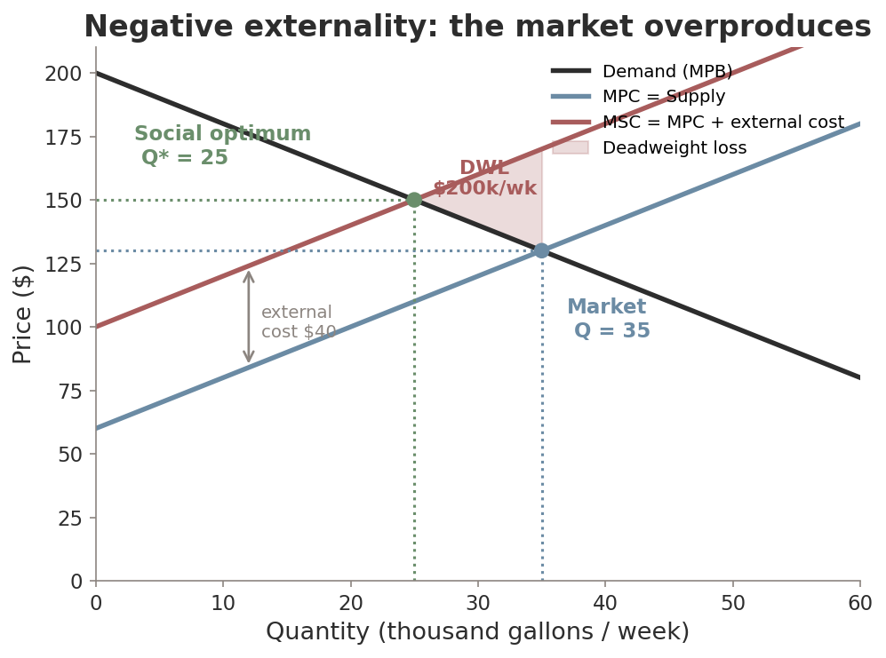
Market sets MPC = demand → Q = 35. Too much.
Society wants MSC = demand → Q* = 25.
The wedge is real damage to people who never bought a drop.
MPC = $60 + $2Q · Demand: P = $200 − $2Q
Unregulated: 60 + 2Q = 200 − 2Q
→ Q = 35, P = $130
Each unit dumps $40 of contamination downstream.
MSC = $100 + $2Q
Efficient: 100 + 2Q = 200 − 2Q
→ Q* = 25, P = $150
Overproduction = 10 thousand gallons
DWL = ½ × 10 × $40 = $200k / week
Real damage, borne by people who never bought a drop of solvent.
PFAS “forever chemicals” — hidden in a $30 jacket; EPA's 2024 water rule costs ~$1.5B/yr to clean up.
Fast fashion (Shein) — 11.2M tons CO₂e in 2024; the $5 t-shirt's price ignores dye pollution & landfill.
Wildfire smoke — PM2.5 drifts thousands of miles; exposure falls hardest on Black & Hispanic residents.
Livestock methane — ~1.5B cows, ~14% of global GHGs. No single owner bears the climate cost.
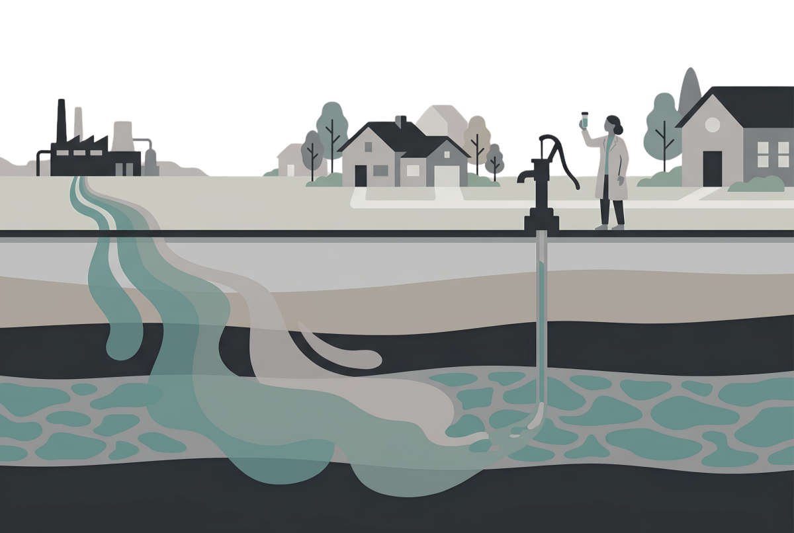
Marginal private benefit (MPB)
What the consumer gets from one more unit — the demand curve.
Marginal social benefit (MSB)
Private benefit plus the external benefit to others.
MSB = MPB + external benefit
Consumers weigh only their own benefit → they buy where MPB = supply, not MSB = supply. The market underproduces.
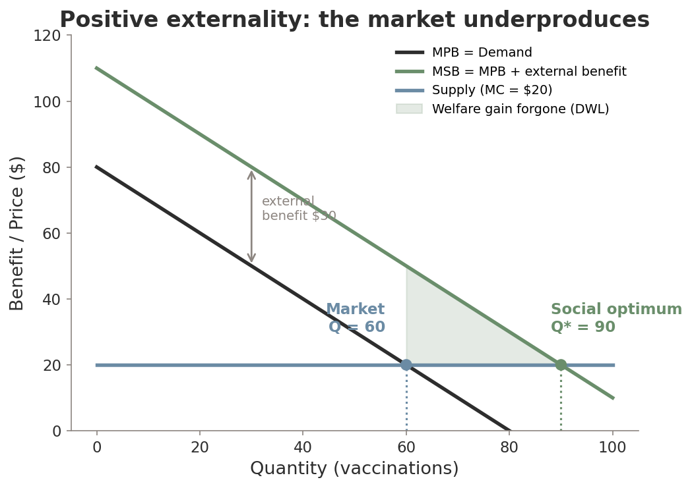
Your private benefit from a flu shot: $50. Cost: $20. You get it.
But you also protect roommates & classmates — ~$30 external benefit. MSB = $80.
Healthy students with $15 private benefit skip it — even though society gains $45. Under-vaccination.
Education — you earn more; society also gets more taxes, less crime, knowledge spillovers. → public schools, Pell Grants.
R&D & the CHIPS Act — knowledge leaks to rivals & society. NIH $48B/yr; $52B for chip fabs.
Open-source AI — Llama, Mistral, Gemma. Firms eat the training cost; thousands of startups reap the benefit.
EV charging — each port cuts “range anxiety” for every driver. 70,000+ fast ports in 2025, heavily subsidized.
When the social return exceeds the private return, the market under-invests — so governments subsidize.
Your neighbor plants a flower garden in their front yard. Everyone on the block enjoys the view, but no one pays them. What does the free market do?
Eliminating the last 1% of pollution might mean grounding planes, closing hospitals, halting food production.
The optimum is where the marginal cost of abating = the marginal damage avoided — not zero.
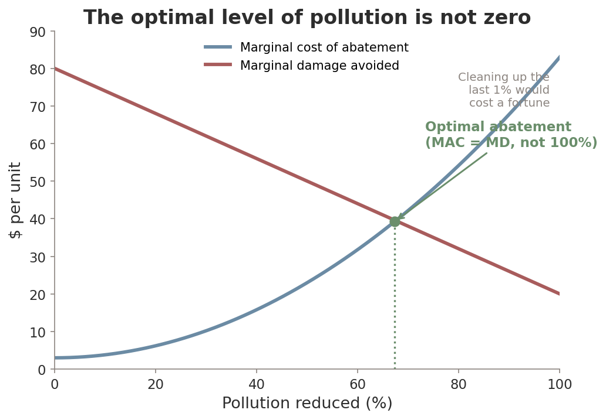
Section 2 · LO 16.2
Ronald Coase, 1960 — sometimes private bargaining beats the government.
If property rights are clear and transaction costs are low, private parties bargain to the efficient outcome — no matter who holds the right.
Your two dogs bark all day. Your neighbor wants quiet. How many hours of barking is efficient?
MB falls as you bark more; the neighbor's MC rises. Efficient where they cross.
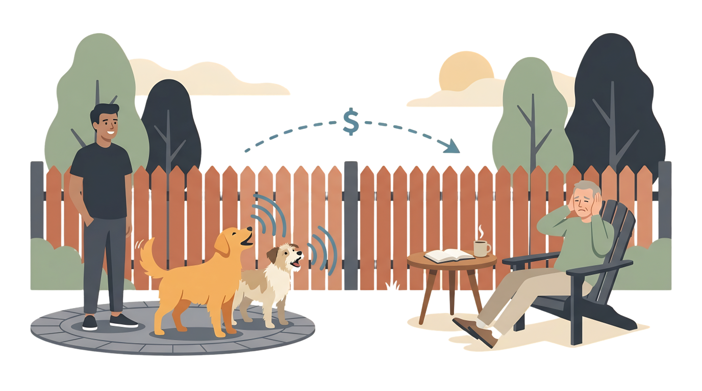
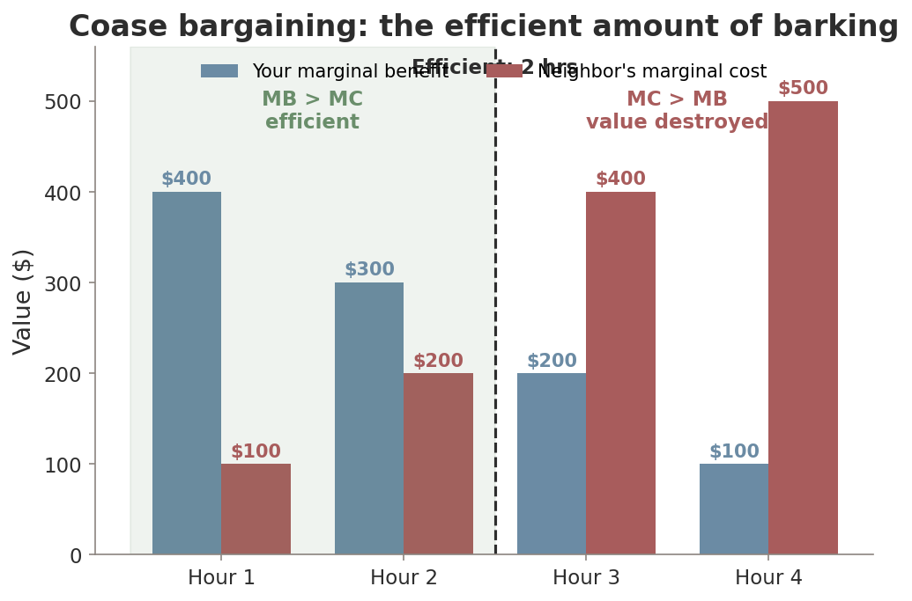
Hours 1–2: your benefit > neighbor's cost → net value created.
Hour 3+: cost ($400) > benefit ($200) → value destroyed.
Efficient = 2 hours, regardless of who holds the right.
You hold the right to bark
Neighbor pays you to silence hour 3 (between $200 and $400). Both win. Hours 1–2 keep barking.
Neighbor holds the right to quiet
You pay for hours 1–2 (MB > MC, deal possible). Hour 3: your $200 < their $400 — no deal.
The efficient quantity (2 hrs) doesn't depend on the assignment of rights. Only the distribution — who pays whom — changes.
High transaction costs — air pollution hits millions. You can't get them all in one room.
Unclear property rights — who “owns” clean air or the ocean? Bargaining can't even start.
Information asymmetry — the polluter may not know (or admit) the true damage.
Strategic behavior — holdouts & “environmental mugging” (threaten more pollution for leverage).
Common misconception: “Coase proves government is never needed.” Backwards — Coase shows why intervention is usually needed: transaction costs are rarely low enough.
Ronald Coase (1910–2013) — Chicago economist, Nobel 1991. “The Problem of Social Cost” (1960) challenged Pigou.
Carbon-offset markets are the biggest real-world Coasian experiment — over $1B/yr in trades by 2025.
But you can't verify a forest was truly saved → high-quality credits cost 381% more. Information friction in action.
Section 3 · LO 16.3 & 16.4
When bargaining fails, put a price on the externality.
A tax on a negative externality set equal to the marginal external cost at the optimal quantity. It forces producers to internalize the spillover.
The tax turns the firm's private cost into the social cost: MPC + tax = MSC.
It doesn't ban pollution — it makes firms pay for it, and they cut to the efficient level.
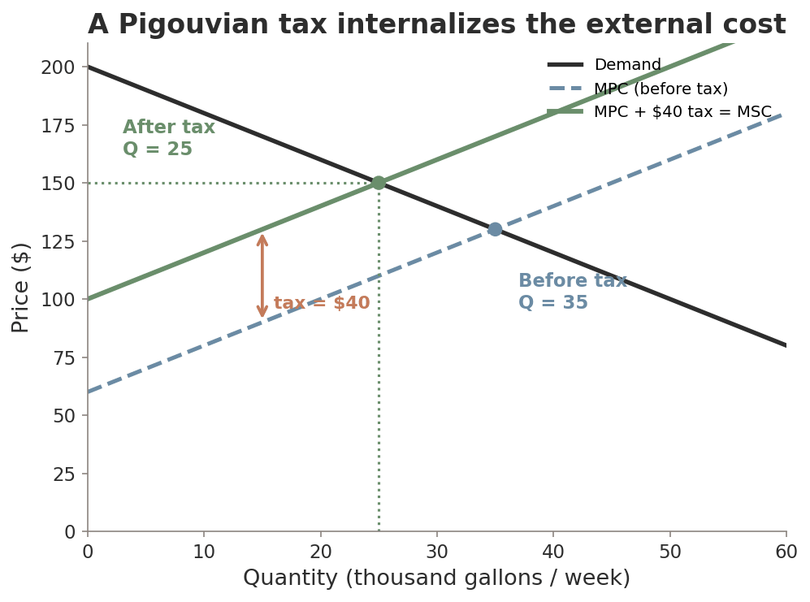
Clearwater's external cost = $40. Set the tax = $40.
New cost: 100 + 2Q = MSC → Q = 25. Exactly efficient.
Revenue = $40 × 25 = $1,000k/wk — fund cleanup or cut other taxes.
Pigouvian subsidy
Pay for activities with external benefits — tuition aid, R&D credits, free vaccines — to push quantity up to the optimum.
Soda taxes (negative)
Philadelphia's 1¢/oz tax cut sugary-drink purchases 27.7%. A 16-country meta-analysis: ~15% average drop.
Crucially, buyers didn't just switch to other sweets — UK kids cut sugar 5g/day, adults 11g/day.
| Feature | Command-and-control | Pigouvian tax / market-based |
|---|---|---|
| Mechanism | Sets quantity limits or technology standards | Sets a price on the externality |
| Flexibility | Low — one rule for all firms | High — firms choose how to respond |
| Cost efficiency | Higher cost | Lower cost (cheap abaters cut most) |
| Certainty | Certain quantity | Certain price, uncertain quantity |
| Best when | Any exposure is dangerous (PFAS, toxins) | Goal is lowest-cost reduction (GHGs) |
Neither wins everywhere. The SO₂ trading program cut acid rain at ¼ the cost regulators predicted.
Kevin Rennert & team (RFF, 2022) rebuilt the dollar value of one extra ton of CO₂ — health, crops, flooding, energy.
Old federal estimate
$51
EPA estimate (2023)
$190 / ton
This single number sets how big a carbon tax should be — and shapes billions in regulatory cost-benefit analysis.
A chemical is a known carcinogen dangerous at any dose in drinking water. Which policy fits best?
Section 4 · LO 16.4 & 16.5
Quantity certainty of a mandate, cost efficiency of a market.
1. Set a cap — a legal limit on total emissions for the period.
2. Issue permits — one permit = one unit of pollution. Permits total exactly the cap.
3. Allow trading — cheap abaters sell spare permits to firms that find cutting expensive.
Trading routes every reduction to where it's cheapest. The cap fixes the total; the market finds the low-cost path.
| Plant | Emissions now | Permits | Abatement cost / ton |
|---|---|---|---|
| A (modern gas) | 50 | 30 | $10 |
| B (older coal) | 50 | 30 | $30 |
| C (heavy industry) | 50 | 30 | $50 |
No trading: each cuts 20 tons. Cost = (20×10)+(20×30)+(20×50) = $1,800.
With trading: A cuts 50 (sells permits), B cuts 10, C cuts 0. Cost = (50×10)+(10×30) = $800.
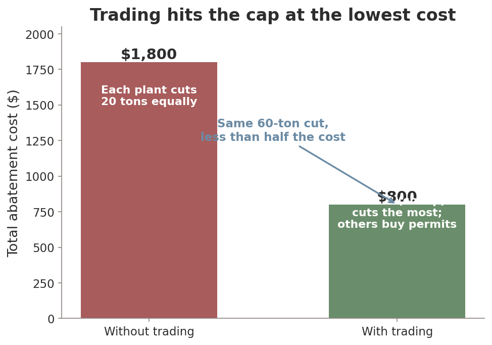
Trading equalizes marginal abatement cost across firms — the condition for minimum total cost.
The cap guarantees the environmental result; the market guarantees it's done cheaply.
EU ETS — world's largest cap-and-trade, since 2005. Permits ~€75/ton; the cap tightens ~8%/yr.
Carbon leakage — strict rules push dirty production abroad. No net emissions cut.
CBAM (Jan 2026): importers pay the EU carbon price they dodged. Chinese steel faces $72–83/ton.
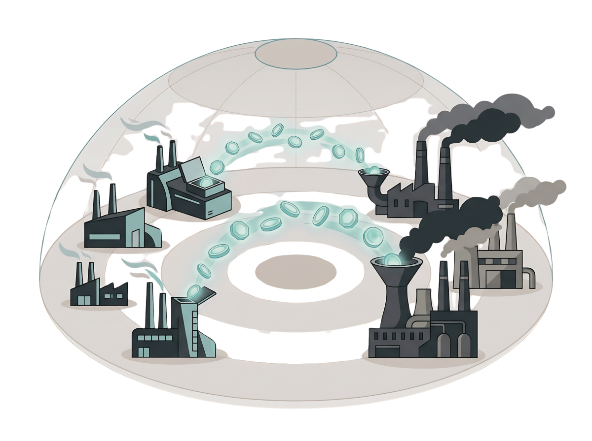
| Carbon tax | Cap-and-trade | |
|---|---|---|
| Price certainty | Yes — firms know the cost | No — permit price swings |
| Quantity certainty | No — emissions uncertain | Yes — cap fixes the total |
| Best when | Firms need to plan investment | There's an ecological tipping point |
Modern systems go hybrid — cap-and-trade with price floors/ceilings (California's $27.94 floor; the EU's Market Stability Reserve).
Coal burned in Ohio warms the whole planet — global, long-term, deeply uncertain.
Free-rider problem — every country wants others to cut. It's the prisoner's dilemma from Ch 13, played by nations.
Kyoto → Paris → COP28: every climate treaty struggles with enforcement because no global authority can punish defectors.
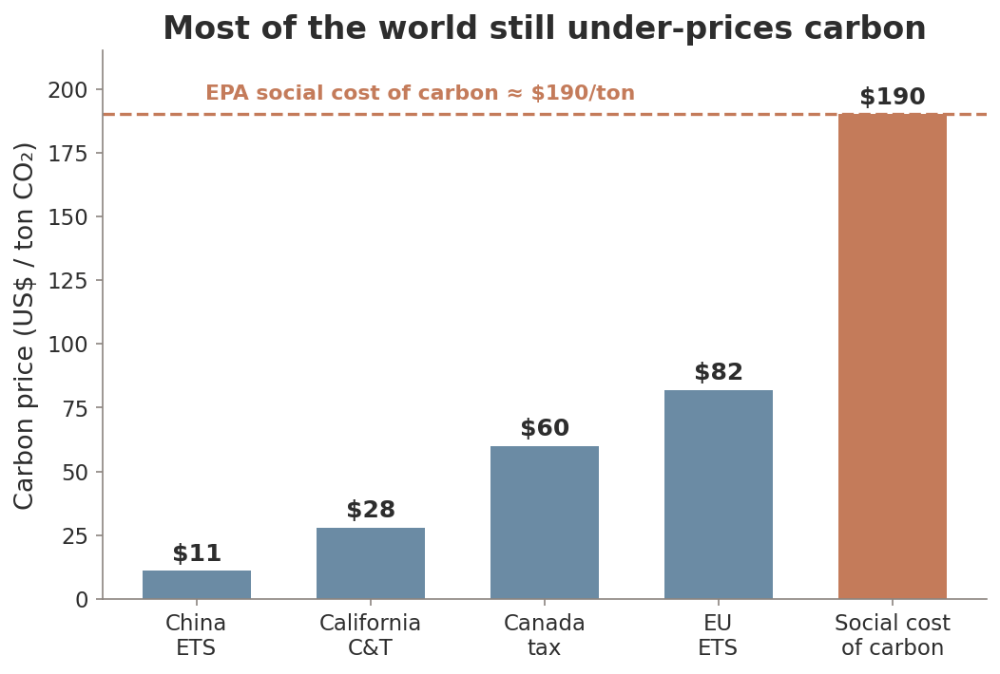
73 carbon-pricing systems cover ~23% of global emissions in 2026 — but prices vary wildly.
Nearly all sit far below the $190 social cost of carbon. The US has no national price.
MethaneSAT (EDF, 2024) maps oil & gas methane from space — revealing US emissions 4× higher than EPA estimates.
In the Permian Basin, the Texas side leaked 2× the New Mexico side — same geology, different rules.
Making pollution visible lowers the information asymmetry Coase identified — transparency moves us toward efficiency.
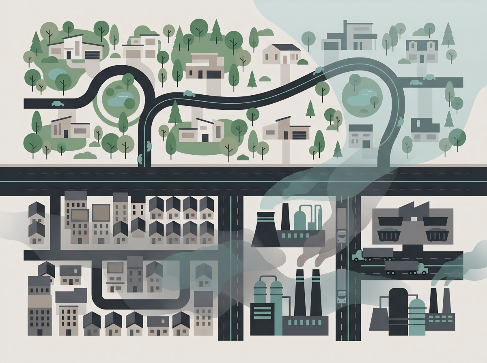
PFAS & wildfire smoke fall hardest on low-income communities and communities of color.
Carbon taxes can be regressive — the poor spend more of their income on energy.
Revenue recycling fixes it: Canada's rebate checks give low-income households back more than they pay.
Present bias — we overweight costs now and underweight benefits decades away.
Cutting emissions costs money today; the avoided floods and heatwaves arrive in 30–50 years. Hyperbolic discounting makes us shrug at distant—even catastrophic—damage.
Climate policy is a fight between what our models recommend and what our psychology will accept.
1. Externalities break efficiency. Negative → MSC > MPC → overproduce. Positive → MSB > MPB → underproduce.
2. Coase: clear rights + low transaction costs → private bargaining is efficient. But costs are rarely low enough.
3. Pigouvian tax = marginal external cost. It internalizes the spillover and raises revenue.
4. Cap-and-trade fixes the quantity; trading delivers it at the lowest cost by exploiting heterogeneity.
5. Information (MethaneSAT) is a third instrument; equity (env. justice) is a separate question from efficiency.
6. Climate is the ultimate externality — global, long-term, and a free-rider problem.
Next time: Chapter 17 — Public Goods & Common Resources. Goods the market can't price at all.
Building On
Setting Up
From a $9 toll to a global carbon market — one idea: make people pay for the spillover.
A steel mill has MPC = $100 + $2Q and faces demand P = $300 − $3Q. Each ton creates $40 of pollution.
What Pigouvian tax achieves the efficient outcome — and what's the efficient quantity? One line each.
Submit on Canvas. 3 minutes.